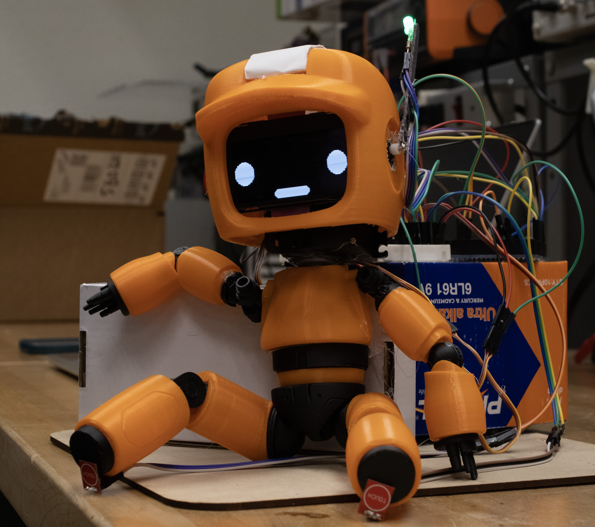

Emotive Robot

- Conceptualized and engineered an innovative 3D-printed robot, drawing inspiration from the "Love, Death & Robots" TV series, to explore the intersection of technology and emotional expression.
- Integrated advanced computer vision algorithms and machine learning models to enable real-time emotion recognition through camera input, allowing the robot to perceive and interpret human facial expressions and body language.
- Focused on innovative design principles to evoke emotional responses using non-anthropomorphic features, challenging conventional notions of human-robot interaction.